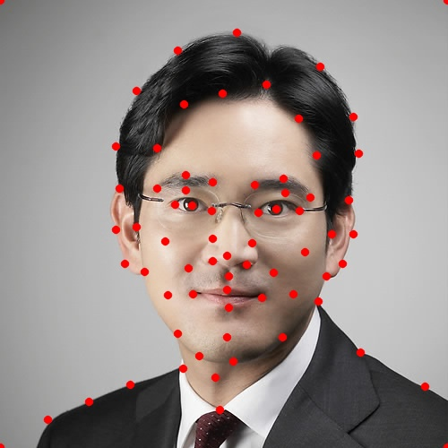

Define correspondences for key points on my face and Lee Jae-Yong's face (Chairman of Samsung)
Compute the "mid-way face" and morph both faces to that shape
Generate a morphing sequence to show a gif of my face morphed to Lee Jae-Yong's face
Calculate the mean face of the Danes population sample
Extrapolate from the mean to create a caricature of my own face
my face morphed to Lee Jae-Yong's face
Part 1: Defining Correspondences
establishing key points on faces
In this part, I manually defined pairs of correspondence points between my face and Lee Jae-Yong's face. I used these points to trace key facial features in the same order across both images using this tool provided on the project specs. All in all, there ended up being 71 pairs of correspondence points across the two faces, including the 4 points at each of the corners.
My face (original)
My face (labelled)
LJY's face (original)

LJY's face (labelled)
Once we have the key points on both faces, I then ran Delaunay via scipy.spatial.Delaunay to compute a triangulation over these points. This results in a N x 3 x 2 matrix, where N is the number of triangles in this triangulation. Delaunay triangulation is a good choice for our purposes because it does not produce overly skinny triangles.
In this section, I implemented a method def morph(...) that takes in the two images, their key points, and 2 new parameters warp_frac and dissolve_frac for linear interpolation. warp_frac determines the shape of the output image that the two input images are warped to (0 corresponds to img1's shape and 1 corresponds to img2's shape), and dissolve_frac determines the cross-dissolve that is interpolated between the two images (0 corresponds to img1's pixels and 1 corresponds to img2's pixels). To generate the mid-way face below, both parameters are set to 0.5.
My face (original)
The "mid-way" face
LJY's face (original)
A more detailed description of my implementation of morphing/inverse warping is as follows:
I used warp_frac to determine mid_pts, which is a convex combination of the two images' points. Then using Delaunay, I computed the triangulation which would be the shape of the output image. From there, I concatenated a ones matrix to convert all of the coordinates to homogenous coordinates. Then, I computed M = np.linalg.solve(a, b), where a is the points of one of the images and b is the points from mid_pts. This means that a[i] @ M[i] = b[i], so for us to do inverse warping, we can do [x y 1] @ np.linalg.inv(M[i]) — i.e. given a coordinate (x, y) in our output image, we can sample the pixel values from coordinate (x', y') in the original image that is computed by inverse warping. The coordinates (x', y') that we compute for the original images aren't always integer values, so I also implemented a 2D bilinear interpolation method that interpolates the color based on its 4 neighbors.
Once I have computed M, I loop through each triangle in the triangulation, and for each point in the triangulation (using skimage.draw.polygon), I use inverse warping to sample the original images to get the pixel values for my output image. Finally, once I have warped both images to my output image, I use dissolve_frac to do a linear combination of the two input images that have been warped. Similar to warp_frac, a value of 0 corresponds to img1's pixel values and 1 corresponds to img2's pixel values.
Part 3: The Morph Sequence
multiple "mid-way" faces combined
This section produces the gif we have seen from above. The only difference is that both warp_frac and dissolve_frac loop from 0 to 1 in 45 equal segments. That way, we have 45 frames with frame 0 corresponding to my face and frame 45 corresponding to LJY's face, as per the project specs. Using a free online tool to make my gifs, I set each frame to be 3/100th of a second (the closest I can get to 1/30th of a second using this tool). The resulting gif is shown down below:
I used the Danes dataset of 37 annotated faces, which consists of 30 males and 7 females. By parsing through the *.asf files in the dataset, I was able to parse and compute the average coordinates of the face shape of the dataset's population. I then morphed every face in the population to this shape and took the average to compute the "mean face" of a population. The triangulation and the average face are shown below:
Dane population mean face shape
Dane population mean face shape with averaged faces
Dane population "mean face"
Down below are some examples of the original Danes' faces alongside the morphed faces to the population mean face shape, as well as my face warped to the average geometry and the average face warped to my geometry. To warp my face to the mean Dane face geometry and vice versa, I created another set of correspondence points based on the annotated information.
01-1m original
01-1m morphed
12-1f original
12-1f morphed
21-1m original
21-1m morphed
30-1f original
30-1f morphed
Using the correspondence tool to re-generate pairs of key points, based on the original positions from the annotated dataset.
Me original
Me morphed to Dane mean shape
Mean face original
Mean face morphed to my shape
Part 5: Caricatures: Extrapolating from the Mean
using various values of alpha
In this section, I use the mean Dane face from the previous section to extrapolate my features. This is accomplished by using diff and alpha. We define diff := average_face_geometry - my_face_geometry and alpha to be any real-valued scalar. Then, we get extrapolated := my_face_geometry + alpha * diff.
alpha = -1
alpha = -0.75
alpha = -0.5
alpha = -0.25
alpha = 0 (equivalent to my original image)
alpha = 0.25
alpha = 0.5
alpha = 0.75
alpha = 1
alpha = 1.25
alpha = 1.5
alpha = 1.75
Mathematically, it makes sense that having alpha = 0 results in my original image. Looking at the the more extreme values of alpha (further away from 0), we can see my face taking on more extreme morphs to the point where it seems as if there are sampling artifacts.
Bells and Whistles
face-morphing music video ft. my friends
For the bells and whistles, my friends and I have created (two) a face-morphing music video of ourselves. The people in these videos are me, Rohan Gulati, Victor Zhou, Kelly Yeh, Natalie Wei, and Jennifer Yin. Because we have used Professor Efros's points and point_labels for our key points and didn't include any corner points, everything outside the max convex hull of the points we annotated is not included. Hence we see our faces floating in a black background. Otherwise, enjoy the videos (for the video on the left hand side, skip to 0:19 to the lyrics edited in; for the video on the right hand side, enjoy the show).
The video that I edited to MILLION DOLLAR BABY by Tommy Richman.
The video that Victor edited to various different songs.
Reflection + Acknowledgements
Reflection
My key takeaway is learning how to morph faces using inverse warping. By clever use of linear interpolation for practically everything, I was able to create very convincing, cool gifs. All in all, this was a quite enjoyable project, and I had lots of fun experimenting around with my own face as well as my friends faces in the process.
Acknowledgements
This project is part of the Fall 2024 offering of CS180: Intro to Computer Vision and Computational Photography, at UC Berkeley. This website template is modified from HTML5 UP, and the images are from myself, my friends, and the Danes dataset.